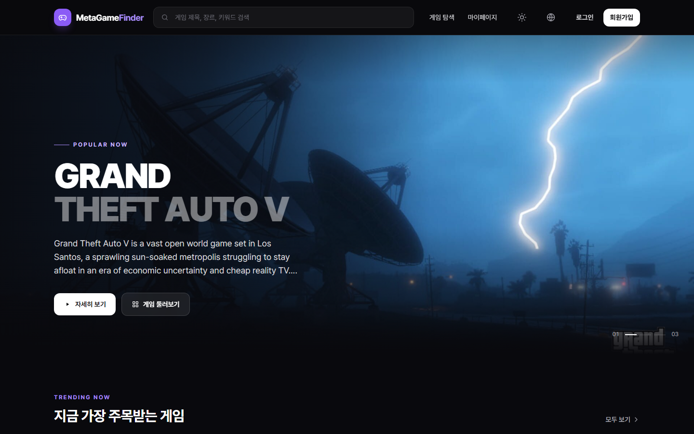
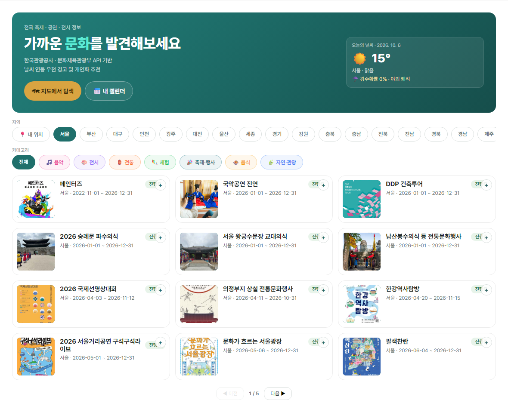

JAVA BACKEND · 신구대학교
Java로 웹 서비스를 만들고 있습니다. 주로 백엔드를 맡지만 화면도 직접 만듭니다. 아래 두 프로젝트는 모두 외부 API(IGDB, 공공데이터, 기상청 등)를 받아서 쓰는 서비스이고, 팀 프로젝트가 끝난 뒤에도 혼자 계속 고치고 있습니다.
숫자로 보면

원하는 느낌을 문장으로 쓰면 AI가 조건으로 바꿔 게임을 찾아 줍니다. 찜, 리뷰, 6개 언어 지원.

전국 축제를 한 곳에서 찾고, 비 예보가 있으면 캘린더에서 미리 알려 줍니다. 캡스톤 디자인 팀장.
번역 결과를 메모리에만 들고 있어서 서버를 껐다 켤 때마다 같은 글을 또 번역하고 있었습니다. DB에 저장하게 바꾸고 나서야 해결됐습니다.
캘린더에 경고 배너 화면은 있었는데 서버가 값을 항상 false로 보내고 있었습니다. 고친 뒤 기상청 API를 직접 찔러 보고 진짜 비 예보인지까지 맞춰 봤습니다.
사용자 폴더 이름이 한글이라 생긴 인코딩 문제였습니다. 원인 찾는 데 한참 걸렸고, 고친 건 플러그인 버전 한 줄이었습니다.
써 본 기술